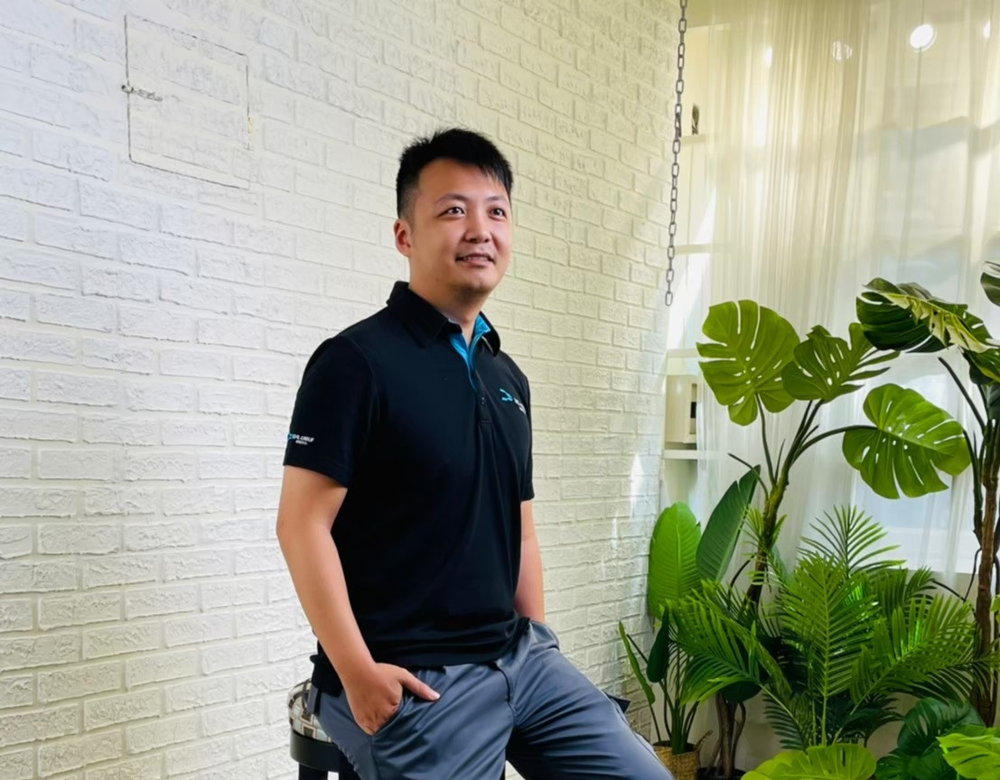

CDA 認證職涯引導師 × 講師
我幫助有 3–10 年真實工作經驗、卻在轉職路上一再碰壁的專業人士， 把你在舊產業累積的底層能力，重新說成目標市場願意買單的語言。 不是包裝，是翻譯。

「大部分人以為卡關是能力問題。
我接觸的個案告訴我：
九成是語言問題，一成是心理問題。
能力早就在那裡了。」
投了很多間，沒有回音。但你知道能力本身不是問題。
履歷改了十幾版，投出去仍然沒消息——卡關點根本不是格式。
有空白期、被辭退、提早退伍……面試時不知道怎麼開口說。
卡在「要繼續還是轉行」，遲遲下不了決定，等著誰給你一個信號。
想走斜槓，卻不知道哪條路在現實裡走得通，不想靠感覺亂飄五年。
知道要動，卻一直拖。不是不努力，是某個東西卡住你了——你還沒命名它。
蒲朝棟 Tim
我的職涯走過三個截然不同的階段。 從軍校到軍職，7 年的紀律與執行力訓練； 到後勤領域深耕 13 年，累積系統性思維與跨部門協作的實戰能力； 再到目前，在正職仍在的狀態下，有計劃地建立職涯顧問的第二條收入線。
這不是刻意的規劃，而是一次一次在關鍵節點選擇停下來、看清楚、聽明白——才走出了現在這條路。「職涯停看聽」這個名字，來自這段真實的歷程。
我幫助有 3–10 年工作經驗的專業人士，解決一個很常見、卻很少被說清楚的問題：「能力明明在，但對方就是看不懂。」
這不是能力問題，是語言問題。我的工作，是幫你建立一張跨產業的語言翻譯地圖——讓你的每一段經歷，都能被對的人理解、被對的職位看見。
同時，我也處理另一個被忽略的問題：那個讓你知道要做卻遲遲不動的心理障礙。因為技術方法再好，心理層面沒解除，諮詢結束後你還是不會動。
7 年｜紀律執行力、SOP 管理、高壓環境應變
20+ 年（目前在職）｜系統性思維、跨部門協作、資源整合
CDA 職涯發展師・104 職涯引導師
300+ 小時・300+ 客戶｜職涯諮詢 × 履歷健檢 × 模擬面試
真正的問題：
九年資歷，履歷寫的全是法院語言——勝訴紀錄、書狀數量。但企業法務聽不懂。問題不是能力，是語言。用 RBS 模型把「寫書狀」翻譯成「控管賠償風險、節省外部律師費」後，面試邀約來了。
翻譯商業語言後，三週內拿到面試
01真正的問題：
國立碩士、TOEIC 840、主動進修 CRE 證照——條件很好，卻用學生思維寫履歷。「參與實驗」vs「設計量測程序降低製程變異」，是完全不同的人。用 STAR 重構後，直接有競爭力。
履歷脫胎換骨，從學生思維到業界語言
02真正的問題：
「評估→診斷→處方」這套邏輯，跟 B2B 顧問銷售的「需求診斷→選項比較→風險說明」幾乎一樣。他只是不知道自己的技能可以這樣翻譯。用財務逆推理解「賣時間」vs「賣價值」的天花板差距後，找到全新方向。
產出科技業 B2B 業務履歷，找到新方向
03真正的問題：
一年空窗不是問題，是他自己還沒搞清楚為什麼要回來。面試官感受到的心虛，是真實的。先釐清求職動機、重新定錨，才重構空白期敘事為「跨文化適應力提升與策略性充電」。
動機清晰後，心虛感消失，面試狀態改變
04真正的問題：
軍中 SOP 執行力＋餐飲業情緒安撫，其實是金融業客服的核心能力組合——只是沒有框架把它們連接起來說。提早退伍從「說不清楚的包袱」，變成「主動評估後的策略性轉換」。
包袱變差異化敘事，策略性從派遣切入
05真正的問題：
怕出錯→拖延→被辭退的循環，在求職上又要走一遍。不先命名這個模式，任何技術建議都落不了地。先處理「完美主義癱瘓」，讓她理解這是防禦機制、不是懶，才讓行動真正開始。
模式被命名後，求職才真正能推進
06S1
適合：感覺卡住但說不清楚卡在哪，或需要外部視角確認方向的人。
首次實付 NT$1,300
預約這個方案S4
適合：有 3–10 年經驗、正在轉型路口、或有一段說不清楚的職涯需要重新包裝的人。
最完整的單次深度諮詢
預約這個方案S6
適合：需要從頭到尾完整支援——方向確認、履歷重寫、面試練習、offer 談判。
相當於每次 NT$1,500
了解陪跑方案履歷健檢與面試輔導
NT$1,200 ／ 60 分鐘
用招募方視角找出真正卡關點。諮詢前請提交履歷，顧問預先診斷。
模擬面試
NT$1,200 ／ 60 分鐘
高強度模擬＋即時反饋。針對你的目標職位設計題組，幫你找到真實盲點。
斜槓職涯諮詢
NT$2,000 ／ 90 分鐘
用財務結構反推哪條路走得通。搭配多路徑策略藍圖，不靠感覺選方向。
不確定哪個方案適合你？先說說你的狀況，我會在 24 小時內回覆建議。 免費說說看 →
01
Psychological Triage
在給任何技術建議之前，先診斷並解除客戶的心理阻礙。技術方法再好，心理層面沒處理，諮詢結束後你還是不會動。
02
Skill Translation Matrix
將你在舊產業的底層能力，翻譯成目標產業能理解且在意的語言。不是說你做了什麼，而是說你能解決什麼問題。
03
STAR Deep Reconstruction
用可驗證的行為事例取代主觀形容詞，讓履歷的每一條經歷都能在 10 秒內讓人看懂你帶來過什麼價值。
04
Narrative Reframing
將不利的職涯事實（空白期、被辭退、提早退伍），轉換為有主導感的真實敘事。不是造假，是找到同一件事對雇主有利的角度。
05
Revenue-Back Positioning
用你的目標收入逆推職涯路徑的商業結構可行性。搞清楚哪條路走得通，才叫真的在規劃，不是在飄。
06
Multi-Path Career Blueprint
整合前五個框架的輸出，形成有條件分支的長期策略地圖——讓你根據自己的風險承受度做選擇，而不是靠感覺。
"
老師在過程中很用心地聽我的想法，也會指出細節問題，例如哪些地方前後矛盾、哪些能力需要和目標企業的職位做連結。我能感覺到老師沒有敷衍，反而非常耐心，在我卡住時也會等我把想法整理好。
模擬面試學員・外商業務轉科技業
Interview Coaching
"
非常感謝蒲朝棟老師給予的指導及建議，解惑我對履歷投遞設定的相關問題，亦精準又具體地提供修改方向和實例，告訴我們什麼內容可以多加以補充說明、提點撰寫時可以加進去的業界指標。獲益良多！
履歷健檢學員・學術研究轉產業界
Resume Review
"
很感謝朝棟老師給我很有建議，尤其是自傳的部分，我當時候不知道怎麼撰寫，我會認為工作經歷已經寫過不因該重複，但是老師給了我很具體的意見，讓我一下就了解了。
職涯諮詢學員・傳產管理轉新創營運
Career Consulting
CDA
職涯發展師認證
104
職涯引導師認證
桃園青年局・桃園市政府就業職訓
大專院校 合作授課
轉職成功・取得 Offer
找到求職方向
填寫預約表單
說明你的狀況與需求，不需要完整準備
確認時間與付款
24小時內回覆，確認諮詢時間與方式
提供資料
提前 3 天提供履歷或相關資料，讓我預先了解你
進行諮詢
線上視訊或面談，深度對話 60–90 分鐘
書面摘要
24小時內收到諮詢重點與行動建議書面摘要
還有其他問題？直接加 LINE 問我，通常當天回覆。
加入 LINE 官方帳號「讓履歷被看見的 5 個關鍵句型」——我把最常幫客戶重寫的句型整理成一頁清單，加 LINE 就直接傳給你，不需要填表單。
通常當天回覆・無任何銷售壓力
開始的第一步
初談完全免費，我會告訴你我能幫你做什麼、
你現在最需要處理的是哪一個問題。
通常 24 小時內回覆・線上視訊或文字皆可